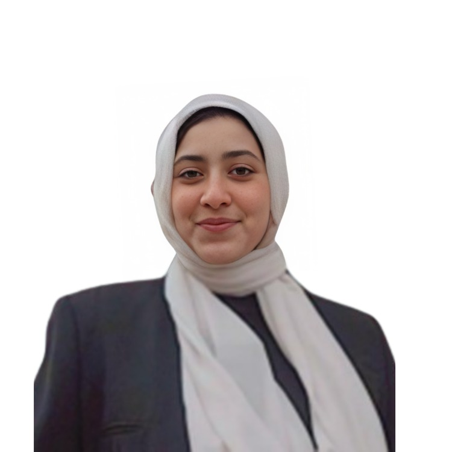
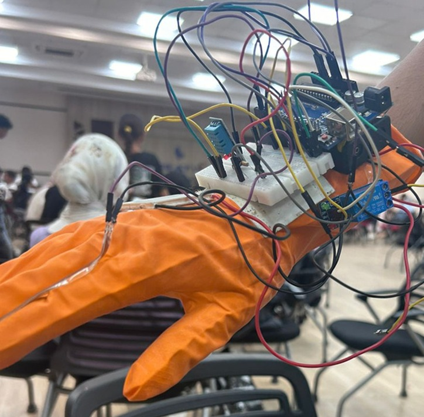
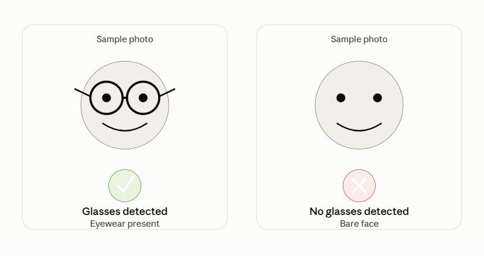
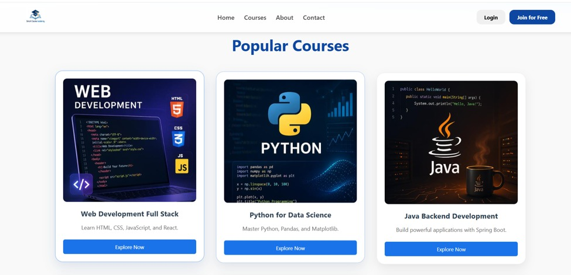

Hi, I'm Gehan Osman
I build where software, AI and hardware meet.
Computer Science student in Qena, Egypt, exploring AI and Computer Vision while building across Python, embedded systems,IoT, and the web.

About
I like taking an idea all the way from a sketch to something that actually runs, whether that's a line of code, a circuit, or a lesson plan for 40 beginners.
I'm a Computer Science student at Qena University with practical experience in Python, C++, SQL, JavaScript, web development, machine learning, and embedded systems. I’ve worked on projects in computer vision, IoT, web development, and data processing, while building my problem solving skills through algorithms, competitions, and real-world projects.
I've worked on projects involving computer vision, IoT, web development, and data processing, while developing my problem-solving skills through algorithms, competitions, and hands-on projects.
What interests me most is the space where these areas come together ,using software and AI to interact with real-world systems. I'm currently strengthening my Python and data skills through the DEPI AI & Data Science track, while continuing to explore computer vision and embedded systems.
I'm still figuring out exactly where I want to specialize, but I know I enjoy building, experimenting, and connecting different parts of technology into something that works.
- Based inQena, Egypt
- CurrentlyIBM Data Scientist Track, DEPI
- Working acrossSoftware · AI · Hardware
- LanguagesArabic, English
Education
-
Jul 2026 – Present
IBM Data Scientist Track — DEPI
Digital Egypt Pioneers Initiative — Python, machine learning, data visualization and AI development.
-
Oct 2024 – Jul 2028
Bachelor of Computers and Information — Qena University
Qena, Egypt — Computer science student building foundations across software development, algorithms, databases, AI and systems.
-
Jul 2022 – Aug 2022
Web Development Scholar — Kode With Klossy
Selected at age 16 for a competitive international coding summer program, working with JavaScript, HTML and CSS.
-
Oct 2020 – Jul 2024
STEM High School
Qena, Egypt
Skills
Programming
Web & data
Embedded & hardware
Tools
Work experience
-
2024 – Present
Coach & Lead Trainer
Robotex, Qena University — grew the club from a small group into a program reaching 50+ students, and ran the university-wide Robotex competition end to end. Recognized as the 2nd best and most impactful student activity university-wide (May 2025).
-
Aug 2025 – Nov 2025
Team Lead, NASA Space Apps Challenge
Led a team of 6 building a hardware-software heat-therapy system for real-time monitoring of rheumatoid arthritis patients, simulated and executed under competition conditions.
-
Oct 2023 – Jul 2024
Fab Lab Leader
STEM School, Qena — managed the school's fabrication lab and trained around 20 students in electronics and digital fabrication: laser cutters, CNC, 3D printers and vinyl cutters.
-
Apr 2024 – Jun 2024
Team Supervisor, Security Monitoring System
STEM School, Qena — supervised 4 junior developers building an IoT security monitoring system, guiding the team through to deployment.
-
Nov 2023 – Dec 2023
Volunteer Arduino Instructor
Fabrication Laboratory, Qena — taught Arduino fundamentals to 40 beginner students, reaching a 90% course completion rate.
What I can help with
Embedded systems & IoT prototyping
Sensor integration, microcontrollers and working hardware-software prototypes from a bare Arduino sketch to a full device.
Computer vision & Python automation
Python-based computer vision projects and machine learning applications.
Tech workshops & training
Beginner-friendly Arduino, fab lab and robotics sessions, built on real classroom and coaching experience.
Front-end web basics
Clean, responsive HTML/CSS/JS interfaces, landing page or small project site.
Projects

Heat Therapy System for Rheumatoid Arthritis
A hardware-software system pairing embedded temperature sensors with a heat-therapy control loop, built for real-time patient monitoring during the NASA Space Apps Challenge. I handled the full stack — sensor integration and hardware assembly through to control logic and the final working prototype.
View on GitHub →
Glasses Detection System
A real-time computer vision system that detects whether a person is wearing glasses from a live camera feed, covering face detection, feature extraction and binary classification. Developed independently, end to end.
View on GitHub →
Online Courses Website
A responsive front-end concept for a course-browsing platform, focused on clear navigation and a calm, readable layout. (Edit this line so it matches your project exactly.)
View on GitHub →Achievements
-
01
Regional 2nd Place
Led a six-person team building a hardware-software health-tech prototype for real-time patient monitoring of rheumatoid arthritis patients.
-
02
2nd Best & Most Impactful Student Activity
Recognized university-wide for growing Robotex into a program reaching 50+ students.
-
03
International Coding Scholar
Selected at age 16 for a competitive international coding summer program.
What people say
Gehan breaks technical topics down so they're easy to follow, and her demos make even complex ideas click right away.
— Training student, Robotex workshop
She's the mentor every team needs. When our prototype hit an issue we couldn't solve for days, Gehan found the root cause and got us working again.
— Teammate, prototype project
Let's build something together.
I'm open to freelance work, internships and collaborations across embedded systems, computer vision and web development. If something here caught your eye, I'd like to hear from you.
gehan1379@outlook.com